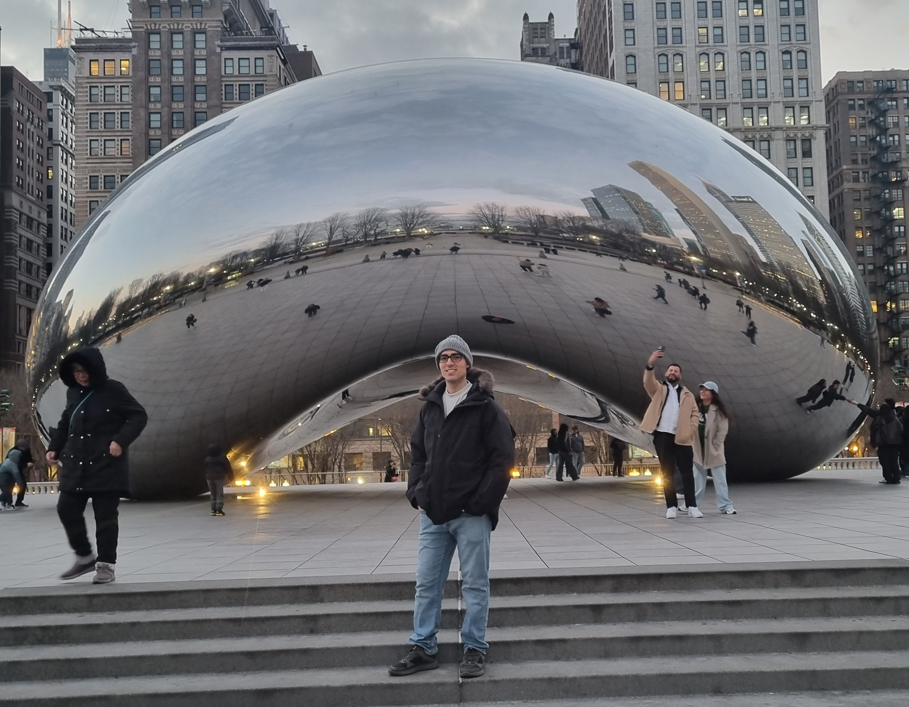
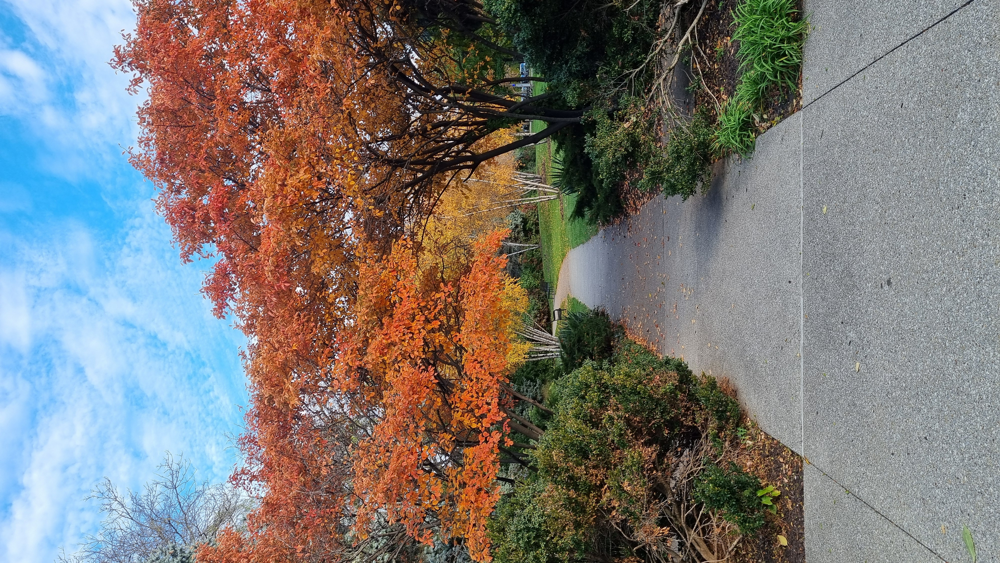

Topological and spectral rigidity of hypersurface Zoll manifolds
This work studies topological and spectral rigidity for manifolds admitting Zoll families of minimal hypersurfaces, as well as rigidity phenomena for the volume spectrum.

Mathematics
I am a Ph.D. student in Mathematics at IMPA, advised by Lucas Ambrozio. I expect to defend my Ph.D. thesis in July or August 2027 and am currently seeking postdoctoral positions starting in September 2027.
From September 2025 to June 2026, I was a visiting Ph.D. student at the University of Chicago, hosted by André Neves.
My research interests lie in differential geometry and geometric analysis, particularly the interplay between minimal surfaces, curvature, and topology. I am especially interested in min-max theory and in how the volume spectrum reflects the geometry and topology of a manifold, particularly in dimensions two and three. My broader interests include geometric relativity and hyperbolic geometry.
This work studies topological and spectral rigidity for manifolds admitting Zoll families of minimal hypersurfaces, as well as rigidity phenomena for the volume spectrum.
Mentored Josh Johnson on minimal surfaces and the Plateau problem, following Chapters 1 and 4 of Colding and Minicozzi’s A Course in Minimal Surfaces.
